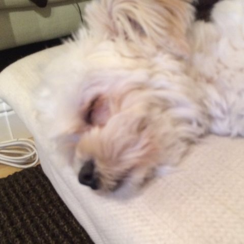
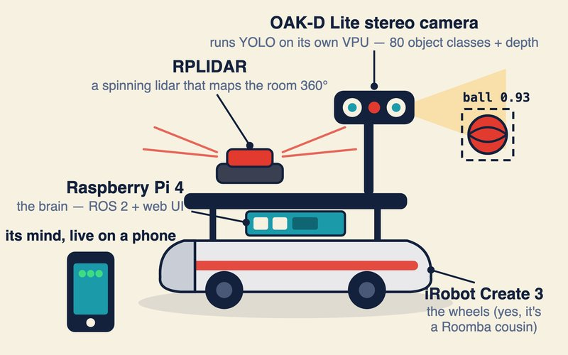
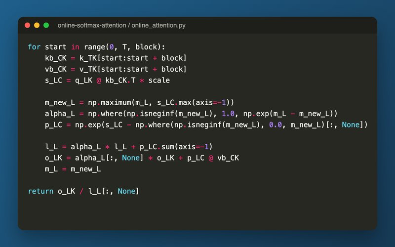

Ming-Hen (Henry) Tsai
Member of Technical Staff at Arena · San Francisco Bay Area
About
I work on machine learning for search, recommendations and multimodal understanding. Before joining Arena, I spent five years on search at Coupang, most recently as tech lead for Search & Discovery, and eight years at Google, in Google Research and YouTube Ads.
Experience
-
Arena2026 – present
-
Coupang2021 – 2026
- Tech lead for a 30+ engineer organization spanning candidate generation and ranking. The team tripled in size and doubled its engagement impact.
- Led a 100x scale-up of the conversion ranking model at almost no added latency or cost, which lifted search engagement by double digits.
- Launched generative retrieval on a shared text, image and tabular representation, which opened up image search and natural-language queries.
- Built Coupang's first deep-learning ranking model and a multimodal LLM that generates signals for search.
-
Google2012 – 2020
- Led a team of seven engineers and research scientists in the BERT group, working on multilingual, multimodal language understanding.
- Built multimodal encoder backbones and a BERT distillation method that cut model size without losing quality, used in Search, Assistant and Gboard.
- Built YouTube Ads' first human-in-the-loop ML pipelines for brand safety and ad targeting, including a model that catches trending sensitive topics.
-
UC Berkeley Extension2018 – 2021
-
Earlier
Education
-
Columbia University2010 – 2012
-
National Taiwan University
-
UC Berkeley, Haas School of Business2025 – 2026
Projects

TurtleBot 4 Glass-box2026
A robot you tell what to do, then watch think. YOLO runs on the OAK-D camera's VPU, lidar builds the map, and A* with pure pursuit drives behaviors like "push the ball to the wall" or "follow me", sequenced by a small task DSL. A phone-friendly web UI shows the live map, plan and detections, and every drive is recorded and replayable.

Coding Interview2026
A LeetCode-style judge for frontier ML engineer and research scientist interview problems: pick a problem, write the code, submit, get a verdict. Problems cover LLM architecture (attention, RoPE, MoE, LoRA), post-training (DPO, GRPO), inference (speculative decoding, quantization), classical ML and distributed systems.
pic_info = ["This", "is", "my", "dog,", "Jasper."]
print(" ".join(pic_info))